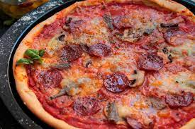

Homemade Pizza

This is a survival pizza recipe that requires the most common ingredients you can find in a kitchen.
Dish Characteristics
The dish takes 30 minutes to be ready and you need an oven.
Ingredients
- 400 gr flour
- 200 ml of water
- 2 teaspoons of extra virgin olive oil
- Pizza ingredientes to choose
Cooking Steps
- Place frying pan at a temperature of 6 out of 10
- Pour a teaspoon of oil in a frying pan
- Chop onion and chorizo into nail size pieces
- Leave onion and chorizo in the pan until golden color
- Boil the pasta for 10 minutes
- Once chorizo and onions are golden pour tomatoe sauce
- Leave tomato mix in fire until a bit less liquid
- Place pasta with tomato mix for 5 minutes and it will be ready
Back to Index